\[
%% Independence symbol (double perp):
\newcommand{\independent}{\mathrel{\perp\!\!\!\perp}}
\]
Parts of this chapter follow the excellent book by Wasserman (2004).
2.1 Basics in Probability Theory
Probability is the mathematical language for quantifying uncertainty. We can apply probability theory to a diverse set of problems, from coin flipping to the analysis of econometric problems. The starting point is to specify the sample space, that is, the set of possible outcomes.
2.1.1 Sample Spaces and (Elementary) Events
The sample space\(\Omega\) is the set of possible outcomes of an experiment. Points \(\omega\) in \(\Omega\) are called sample outcomes, realizations, or elementary events. Events are subsets of \(\Omega\).
Example: Two Coin Tosses
If we toss a coin twice, then \(\Omega=\{H H, H T, T H, T T\}.\) The event that the first toss is heads is \(A=\{H H, H T\}.\)
Example: \(\Omega=\mathbb{R}\)
Let \(\omega\) be the outcome of a measurement of some physical quantity, for example, temperature. Then \(\Omega=\mathbb{R}=(-\infty, \infty).\) The event that the measurement is larger than 10 but less than or equal to 23 is \(A=(10,23].\)
Example: Tossing a Coin Infinitely Often
If we toss a coin forever, then the sample space is the infinite set \(\Omega=\left\{\omega=\left(\omega_{1}, \omega_{2}, \omega_{3}, \ldots\right)|\omega_{i} \in\{H, T\}\right\}\). Let \(A\) be the event that the first head appears on the third toss. Then \(A=\left\{\left(\omega_{1}, \omega_{2}, \omega_{3}, \ldots\right)| \omega_{1}=T, \omega_{2}=T, \omega_{3}=H, \omega_{i} \in\{H, T\} \text { for } i>3\right\}.\)
Complement: Given an event \(A,\) let \(A^{c}=\{\omega \in \Omega | \omega \notin A\}\) denote the complement of \(A\). Informally, \(A^{c}\) can be read as “not \(A\).” The complement of \(\Omega\) is the empty set \(\emptyset\).
Union: The union of events \(A\) and \(B\) is defined as \[
A\cup B=\{\omega \in \Omega|\omega\in A\text{ or }\omega \in B\text{ or }\omega\in\text{ both}\}
\] which can be read as “\(A\) or \(B\).” If \(A_{1}, A_{2}, \ldots\) is a sequence of sets, then \[
\bigcup_{i=1}^{\infty} A_{i}=\left\{\omega \in \Omega | \omega \in A_{i} \text{ for at least one } i\right\}.
\]
Intersection: The intersection of \(A\) and \(B\) is defined as \[
A \cap B=\{\omega \in \Omega | \omega \in A\text{ and }\omega \in B\}
\] which can be read as “\(A\) and \(B\).” If \(A_{1}, A_{2}, \ldots\) is a sequence of sets, then \[
\bigcap_{i=1}^{\infty} A_{i}=\left\{\omega \in \Omega | \omega \in A_{i} \text{ for all } i\right\}.
\]
If every element of \(A\) is also contained in \(B\), we write \(A \subset B\) or, equivalently, \(B \supset A\). If \(A\) is a finite set, let \(|A|\) denote the number of elements in \(A\). We say that \(A_{1}, A_{2}, \ldots\) are disjoint or mutually exclusive if \(A_{i} \cap A_{j}=\emptyset\) whenever \(i \neq j\). For example, \(A_{1}=[0,1), A_{2}=[1,2), A_{3}=[2,3), \ldots\) are disjoint. A partition of \(\Omega\) is a sequence of disjoint sets \(A_{1}, A_{2}, \ldots\) such that \(\bigcup_{i=1}^{\infty} A_{i}=\Omega\).
Summary: Sample space and events
\[
\begin{array}{ll}
\Omega & \text { sample space } \\
\omega & \text { outcome, elementary event, realization}\\
A & \text { event (subset of } \Omega) \\
|A| & \text { number of points in } A \text { (if } A \text { is finite) }\\
A^{c} & \text { complement of } A (\operatorname{not} A)\\
A \cup B &\text{ union }(A\text{ or }B)\\
A \cap B &\text{ intersection }(A \text { and } B);\text{ short notation: }A,B\\
A \subset B &\text{ set inclusion }(A \text{ is a subset of or equal to }B)\\
\emptyset &\text{ null event (always false)}\\
\Omega &\text{ true event (always true)}
\end{array}
\]
2.1.2 Probability
We want to assign a real number \(P(A)\) to every event \(A\), called the probability of \(A\). A function \(P\) that assigns a real number \(P(A)\) to each event \(A\) is called a probability distribution or a probability measure if it satisfies the following three axioms:
Axiom 1:\(P(A) \geq 0\) for every \(A\).
Axiom 2:\(P(\Omega)=1\).
Axiom 3: If \(A_{1}, A_{2}, \ldots\) are disjoint, then \[
P\left(\bigcup_{i=1}^{\infty} A_{i}\right)=\sum_{i=1}^{\infty} P\left(A_{i}\right).
\]
🤓 Nerd’s Box: Sigma-Algebra
It is not always possible to assign a probability to every event \(A\) if the sample space is large. For instance, in the case of \[
\Omega=\mathbb{R}
\] strange things can happen. There are pathological sets (e.g., Vitali sets) that break down the mathematics, since they are non-measurable (i.e., we cannot assign probabilities to them). Therefore, in cases like \(\Omega=\mathbb{R}\), we assign probabilities to a limited class of sets called a \(\sigma\)-field or \(\sigma\)-algebra.
For \(\Omega=\mathbb{R}\), the canonical \(\sigma\)-algebra is the Borel \(\sigma\)-algebra. The Borel \(\sigma\)-algebra on \(\mathbb{R}\) is generated by the collection of all open subsets of \(\mathbb{R}\).
In this course, we always use the Borel \(\sigma\)-algebra. Fortunately, we do not have to bother with it any further; it lurks in the background and makes things work for us.
Many properties of \(P\) can be derived from the three axioms. Here are a few:
A less obvious property is that, for any events \(A\) and \(B\), \[
P(A \cup B)=P(A)+P(B)-P(A\cap B).
\]
Exercise: Two Consecutive Coin Tosses
Let \(H_{1}\) be the event that heads occurs on toss 1 and let \(H_{2}\) be the event that heads occurs on toss 2. Likewise for \(T_1\) and \(T_2.\) The coin is a “fair coin”, i.e., all outcomes are equally likely,\[
P(H_1)=P(H_2)=P(T_1)=P(T_2)=\frac{1}{2}.
\] Moreover, you can assume that the first and the second toss are independent of each other, such that \[
\begin{align*}
&P\left(H_{1}\cap H_{2}\right)=
P\left(H_{1}\cap T_{2}\right)=
P\left(T_{1}\cap H_{2}\right)=
P\left(T_{1}\cap T_{2}\right)=\frac{1}{4}%\\[2ex]
%&=\frac{1}{4}+\frac{1}{4}+\frac{1}{4}+\frac{1}{4}=1.
\end{align*}
\]Problem: What is the probability that heads occurs on toss 1 or on toss 2?
One can interpret \(P(A)\) in terms of frequencies. That is, \(P(A)\) is the (infinitely) long-run proportion of times that \(A\) is true in repeated experiments. For example, if we say that the probability of heads is \(1/2\), i.e., \(P(H)=1/2\), we mean that if we flip the coin many times, then the proportion of heads tends to \(1/2\) as the number of tosses increases. An infinitely long, unpredictable sequence of tosses whose limiting proportion tends to a constant is an idealization, much like the idea of a straight line in geometry.
The following R code approximates the probability \(P(H)=1/2\) using 5, 50, and 5,000 (pseudo-)random coin flips:
set.seed(869)## 5 (fair) coin-flips:results<-sample(x =c("H", "T"), size =5, replace =TRUE)## Relative frequency of "H" in 5 coin-flipslength(results[results=="H"])/5
[1] 0.2
## 50 (fair) coin-flips:results<-sample(x =c("H", "T"), size =50, replace =TRUE)## Relative frequency of "H" in 50 coin-flipslength(results[results=="H"])/50
[1] 0.52
## 5000 (fair) coin-flips:results<-sample(x =c("H", "T"), size =5000, replace =TRUE)## Relative frequency of "H" in 5000 coin-flipslength(results[results=="H"])/5000
[1] 0.5024
2.1.3 Independent Events
If we flip a fair coin twice, then the probability of two heads is \(\frac{1}{2} \times \frac{1}{2}\). We multiply the probabilities because we regard the two tosses as independent. Two events \(A\) and \(B\) are called independent if
\[
P(A\cap B)=P(A) P(B).
\]
More generally, the events \(A_1,A_2,\dots,A_n\) are (mutually) independent if
\[
P\left(\bigcap_{i\in\mathcal{I}} A_{i}\right)=\prod_{i\in\mathcal{I}} P\left(A_{i}\right)
\] for every subset \(\mathcal{I}\subseteq\{1,2,\dots,n\}.\)
Independence can arise in two distinct ways. Sometimes, we explicitly assume that two events are independent. For example, in tossing a coin twice, we usually assume that the tosses are independent, which reflects the fact that the coin has no memory of the first toss.
In other instances, we derive independence by verifying that the definition of independence \(P(A\cap B)=P(A)P(B)\) holds.
Exercise: Deriving Independence
In tossing a fair die once, let \[
A=\{2,4,6\}
\] be the event of observing an even number and let \[
B=\{1,2,3,4\}
\] be the event of observing no \(5\) and no \(6\).
Then, \[
A \cap B=\{2,4\}
\] is the event of observing either a \(2\) or a \(4\).
Problem: Are the events \(A\) and \(B\) independent?
Solution:\[
P(A\cap B)=\frac{2}{6}=P(A)P(B)=\frac{1}{2}\cdot \frac{2}{3}
\] and so \(A\) and \(B\) are independent.
Note: In this case, we did not assume that \(A\) and \(B\) are independent; it just turned out that they are.
Exercise: Independence vs. Disjoint Events
Suppose that \(A\) and \(B\) are disjoint events, i.e., \[
A\cap B=\emptyset,
\] and that both have strictly positive probabilities, i.e., \(P(A)>0\) and \(P(B)>0.\)
Problem: Can the events \(A\) and \(B\) be independent?
Solution: No. Checking the definition of independence, we find that \[
P(A\cap B)=P(\emptyset)=0<\underbrace{P(A)}_{>0}\;\underbrace{P(B)}_{>0},
\] and thus \(P(A\cap B)\neq P(A)P(B).\)
Answer: Disjoint events with strictly positive probabilities are never independent.
Example: In tossing a fair die once, let \[
A=\{1,2\}
\] be the event of observing a \(1\) or a \(2\) and let \[
B=\{5,6\}
\] be the event of observing a \(5\) or a \(6\).
Then \(A\cap B=\emptyset,\) although \(P(A)=\frac{1}{3}>0\) and \(P(B)=\frac{1}{3}>0.\) Thus, \[
P(A\cap B)=P(\emptyset)=0\neq \frac{1}{9}=\underbrace{P(A)}_{=\frac{1}{3}}\;\underbrace{P(B)}_{=\frac{1}{3}}.
\]
Intuition: Disjoint events are strongly dependent: knowing that \(A\) has occurred tells us that \(B\) cannot have occurred too.
Summary: Independent Events
\(A\) and \(B\) are independent if \(P(A\cap B)=P(A) P(B)\).
Independence is sometimes assumed and sometimes derived.
Disjoint events with strictly positive probabilities are not independent.
2.1.4 Conditional Probability
If \(P(B)>0\), then the conditional probability of \(A\) given \(B\) is \[
P(A \mid B)=\frac{P(A\cap B)}{P(B)}.
\] Think of \(P(A \mid B)\) as the fraction of times \(A\) occurs among those in which \(B\) occurs. Here are some facts about conditional probabilities:
The rules of probability apply to events on the left of the bar “\(\mid\)”. That is, for any fixed \(B\) such that \(P(B)>0\), \(P(\cdot \mid B)\) is a probability, i.e., it satisfies the three axioms of probability:
\(P(A \mid B) \geq 0\)
\(P(\Omega \mid B)=1\)
If \(A_{1}, A_{2}, \ldots\) are disjoint, then \(P\left(\bigcup_{i=1}^{\infty} A_{i} \mid B\right)=\sum_{i=1}^{\infty} P\left(A_{i} \mid B\right)\).
However, it is generally not true that \(P(A \mid B \cup C)=P(A \mid B)+P(A \mid C)\).
Prosecutor’s Fallacy:
In general, it is also not true that \[
P(A \mid B)=P(B \mid A).
\] People get this confused all the time.
For example, the probability of spots given you have measles is 1 but the probability that you have measles given that you have spots is not \(1\). In this case, the difference between \(P(A \mid B)\) and \(P(B \mid A)\) is obvious, but in other cases it is less obvious. This mistake is made often enough in legal cases that it is therefore sometimes called the “prosecutor’s fallacy”.
Example: Medical Tests
A medical test for a disease \(D\) has outcomes \(+\) and \(-.\) The probabilities are:
\[
\begin{array}{c|cc|c}
& D & D^{c} \\
\hline
+ & P(+\cap D)=0.0081 & P(+\cap D^c)=0.0900 & P(+)=0.0981\\
- & P(-\cap D)=0.0009 & P(-\cap D^c)=0.9010 & P(-)=0.9019\\
\hline
& P(D)=0.0090 & P(D^c)=0.9910 & 1
\end{array}
\] From the definition of conditional probability, we have:
Sensitivity of the test: \[\begin{align*}
P(+\mid D)
& = \frac{P(+\cap D)}{P(D)}\\[2ex]
& = \frac{0.0081}{(0.0081+0.0009)}=0.9=90\%
\end{align*}\]
Specificity of the test: \[\begin{align*}
P(-\mid D^{c})
& = \frac{P(-\cap D^{c})}{P(D^{c})}\\[2ex]
& = \frac{0.9010}{(0.9010+0.0900)}\approx 0.9=90\%
\end{align*}\]
At first sight, the test seems fairly accurate:
Sick people yield a positive test result 90 percent of the time.
Healthy people yield a negative test result about 90 percent of the time.
Now, suppose you go for a test and get a positive result. What is the probability you have the disease?
▶️ Most people answer \(0.90=90\%.\)
However, this conclusion is wrong (prosecutor’s fallacy).
The correct answer is \[
\begin{align*}
P(D \mid+)
& = \frac{P(+\cap D)}{P(+)}\\[2ex]
& = \frac{0.0081}{(0.0081+0.0900)}\approx 0.08 = 8\%.
\end{align*}
\]
The lesson here is that you need to compute the answer numerically. Don’t trust your intuition.
Independence via Conditional Probabilities
If \(A\) and \(B\) are independent events, then \[
P(A \mid B)=\frac{P(A\cap B)}{P(B)}=\frac{P(A) P(B)}{P(B)}=P(A).
\] Thus, another interpretation of independence is that knowing \(B\) does not change the probability of \(A\).
From the definition of conditional probability, we can write \[
P(A\cap B)=P(A \mid B) P(B)
\] and also \[
P(A\cap B)=P(B \mid A) P(A).
\] Often, these formulas give us a convenient way to compute \(P(A\cap B)\) when \(A\) and \(B\) are not independent.
Exercise: Drawing Cards Without Replacement
Draw two cards from a standard deck of \(52\) cards without replacement.
Problem: What is the probability of drawing
the Ace of Clubs 🃑 in the first draw, and
the Queen of Diamonds 🃍 in the second draw?
Solution: Let
\(A\) be the event that the first draw is the Ace of Clubs 🃑, and
\(B\) be the event that the second draw is the Queen of Diamonds 🃍.
We want to compute \[
P(A \cap B).
\]
The probability of drawing the Ace of Clubs 🃑 in the first draw is \[
P(A)=\frac{1}{52}.
\]
Given that the Ace of Clubs 🃑 was drawn first and not replaced, \(51\) cards remain, one of which is the Queen of Diamonds 🃍. So, the probability of drawing the Queen of Diamonds 🃍 in the second draw is \[
P(B\mid A)=\frac{1}{51}.
\]
Rearranging the definition of conditional probability gives \[\begin{align*}
P(B \mid A) & = \frac{P(A\cap B)}{P(A)}\\[2ex]
\Leftrightarrow\quad
P(A\cap B)
&= P(A)\;\cdot\;P(B \mid A)\\[2ex]
&=\frac{1}{52}\cdot\frac{1}{51}=\frac{1}{2652}\approx 0.00038.
\end{align*}\]
Summary: Conditional Probability
If \(P(B)>0\), then \(P(A \mid B)=P(A\cap B)/P(B)\).
For fixed \(B\), \(P(\cdot \mid B)\) satisfies the axioms of probability. In general, for fixed \(A\), \(P(A \mid \cdot)\) does not satisfy the axioms of probability.
In general, \(P(A \mid B) \neq P(B \mid A)\).
If \(P(B)>0\), then \(A\) and \(B\) are independent if and only if \(P(A \mid B)=P(A)\).
2.2 Random Variables
Statistics and econometrics are concerned with data. How do we link sample spaces, events and probabilities to data? The link is provided by the concept of a random variable. A real-valued random variable is a mapping \(X: \Omega \rightarrow \mathbb{R}\) that assigns a real number \(X(\omega)\in\mathbb{R}\) to each outcome \(\omega\in\Omega\).
After a certain point, most statistics and econometrics courses rarely mention the sample space \(\Omega\) and work directly with random variables. But you should keep in mind that the sample space is really there, lurking in the background.
Example: Number of Heads in Ten Coin Flips
Flip a coin ten times. Let \(X(\omega)\) be the number of heads in the sequence \(\omega.\) For example, if \[
\omega=\text{HHTHHTHHTT},
\] then \(X(\omega)=6.\)
Example: Drawing a Point from the Unit Disc
Let \[
\Omega=\left\{(x, y)\in\mathbb{R}^2 \mid x^{2}+y^{2} \leq 1\right\}
\] be the unit disc, and consider drawing a point “at random” from \(\Omega\). A typical outcome is then of the form \(\omega=(x, y).\) Some examples of random variables are
\(X(\omega)=x\) (the horizontal coordinate),
\(Y(\omega)=y\) (the vertical coordinate),
\(Z(\omega)=x+y,\) and
\(W(\omega)=\sqrt{x^{2}+y^{2}}\) (the distance from the origin).
Example: Number of Heads in Two Coin Flips
Flip a fair coin twice and let \(X\) be the number of heads. Then, \[\begin{align*}
P_X(X=0)&=P(\{TT\})=\frac{1}{4},\\[1ex]
P_X(X=1)&=P(\{HT, TH\})=\frac{1}{2},\\[1ex]
P_X(X=2)&=P(\{HH\})=\frac{1}{4}.
\end{align*}\] The outcomes \(\omega\) with their probabilities \(P(\{\omega\})\) and values \(X(\omega)\) (left table), and the resulting distribution \(P_X\) of the random variable \(X\) (right table), can be summarized as follows:
\(\omega\)
\(P(\{\omega\})\)
\(X(\omega)\)
\(TT\)
\(1/4\)
\(0\)
\(TH\)
\(1/4\)
\(1\)
\(HT\)
\(1/4\)
\(1\)
\(HH\)
\(1/4\)
\(2\)
\(x\)
\(P_X(X=x)\)
\(0\)
\(1/4\)
\(1\)
\(1/2\)
\(2\)
\(1/4\)
Here, \(P_{X}\) is not the same probability function as \(P\): \(P\) assigns probabilities to events in the sample space \(\Omega\) (here, sets of outcomes such as \(\{HT, TH\}\)), while \(P_X\) assigns probabilities to sets of values of \(X\) (here, subsets of \(\{0,1,2\}\)). In the following, we typically ignore the sample space \(\Omega\) and simply think of the random variable as an experiment with real-valued (possibly multivariate) outcomes. Therefore, we write \(P\left(X=x_{k}\right)\) instead of \(P_{X}\left(X=x_{k}\right)\) to simplify the notation.
🤓 Nerd’s Box: Linking \(P_X\) to \(P\)
Given a real-valued random variable \(X:\Omega\rightarrow\mathbb{R}\) and a subset \(A\subseteq\mathbb{R}\) of the real line, define the pre-image\[
X^{-1}(A)=\{\omega \in \Omega \mid X(\omega) \in A\}.
\] This allows us to link the probabilities of the random variable \(X\), i.e., the probabilities we usually work with, to the probabilities of the underlying events, i.e., the probabilities lurking in the background: \[
P_X(X\in A)=P\left(X^{-1}(A)\right).
\]
2.2.1 Univariate Distribution and Probability Functions
2.2.1.1Cumulative Distribution Function
The cumulative distribution function (cdf)\[
F_{X}: \mathbb{R} \rightarrow [0,1]
\] of a real-valued random variable \(X\in\mathbb{R}\) is defined by \[
F_{X}(x)=P(X \leq x).
\]
You might wonder why we bother to define the cdf. The reason is that it effectively contains all the information about the random variable.
Indeed, let \(X\in\mathbb{R}\) have cdf \(F\) and let \(Y\in\mathbb{R}\) have cdf \(G\). If \(F(x)=G(x)\) for all \(x\in\mathbb{R},\) then \(P(X \in A)=P(Y \in A)\) for all (Borel) sets \(A\subseteq\mathbb{R}\). To denote that two random variables \(X\) and \(Y\) have the same distribution, we write \(X\overset{d}{=}Y\).
The defining properties of a cdf: A function \(F:\mathbb{R}\to[0,1]\) is the cdf of some probability measure \(P\) if and only if it satisfies the following three properties:
\(F\) is non-decreasing, i.e., \(x_{1}<x_{2}\) implies that \(F\left(x_{1}\right) \leq F\left(x_{2}\right)\).
\(F\) is normalized, i.e., \(\lim_{x\rightarrow-\infty} F(x)=0\) and \(\lim_{x \rightarrow \infty} F(x)=1\).
\(F\) is right-continuous, i.e., \(F(x)=F\left(x^{+}\right)\) for all \(x\), where \[
F\left(x^{+}\right)=\lim_{y\to x,\, y>x} F(y).
\]
Example: cdf of a Discrete Random Variable (Car Sales)
A small car dealership sells \(X\in\{0,1,2,3\}\) cars per day with the following probabilities:
\(x\)
\(0\)
\(1\)
\(2\)
\(3\)
\(P(X=x)\)
\(0.2\)
\(0.4\)
\(0.3\)
\(0.1\)
The cdf \(F_X(x)=P(X\leq x)\) adds up these probabilities for all values less than or equal to \(x\): \[
F_X(x)=\left\{\begin{array}{ll}
0 & \text{for } x<0 \\
0.2 & \text{for } 0\leq x<1 \\
0.6 & \text{for } 1\leq x<2 \\
0.9 & \text{for } 2\leq x<3 \\
1 & \text{for } x\geq 3.
\end{array}\right.
\] For instance, the probability that the dealership sells at most one car on a given day is \(F_X(1)=0.6,\) and the probability that it sells more than two cars is \(1-F_X(2)=0.1.\)
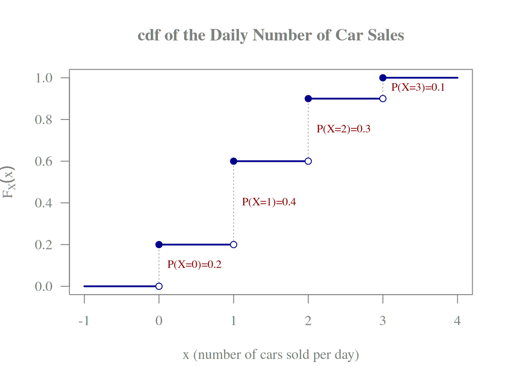
The cdf of a discrete random variable is a step function. It jumps at each possible value \(x\) of \(X\), and the height of each jump equals the probability \(P(X=x)\). The filled dots show that \(F_X\) is right-continuous (property 3).
Example: cdf of a Continuous Random Variable (Customer Arrivals)
Let \(X\in[0,\infty)\) be the waiting time (in minutes) until the next customer enters a shop. A common model for such waiting times is the exponential distribution, here with an average waiting time of \(5\) minutes. Its cdf is \[
F_X(x)=\left\{\begin{array}{ll}
0 & \text{for } x<0 \\
1-e^{-x/5} & \text{for } x\geq 0.
\end{array}\right.
\] For instance, the probability that the next customer arrives within \(5\) minutes is \[\begin{align*}
P(X\leq 5)
&=F_X(5)\\[2ex]
&=1-e^{-1}\approx 0.63.
\end{align*}\]
And the probability that the shop assistant has to wait more than \(10\) minutes is \[\begin{align*}
P(X > 10)
&= 1 - P(X \leq 10)\\[2ex]
&= 1-F_X(10)\\[2ex]
&= e^{-2}\approx 0.14.
\end{align*}\]
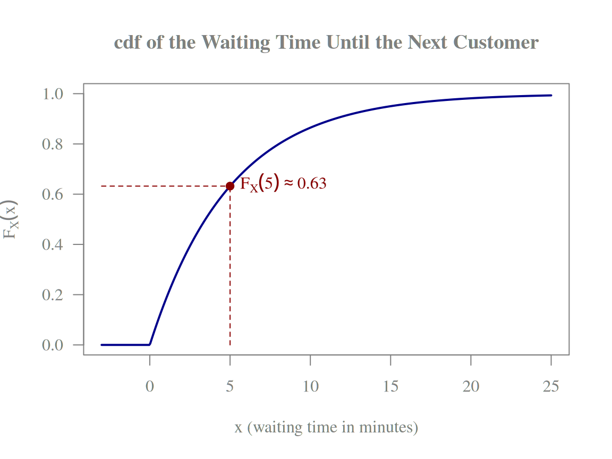
The cdf of a continuous random variable has no jumps, since \(P(X=x)=0\) for every single value \(x\). Instead, the cdf increases continuously as \(x\) increases.
As an alternative to cdfs, we can use
probability (mass) functions to describe the distribution of discrete random variables, and
density functions to describe the distribution of continuous random variables.
2.2.1.2Probability Functions for Discrete Random Variables
A random variable \(X\) is discrete if it takes only countably many values \[
X\in\{x_{1}, x_{2}, \ldots,x_{m}\},
\] where \(m\) can also be infinite, \(m=\infty\), i.e., \(X\in\{x_{1}, x_{2}, \ldots\}\). For instance:
\(X\in\{1,2,3\}\)
\(X\in\{2,4,6,8,10\}\)
\(X\in\mathbb{N}=\{0,1,2,3,\dots\}\)
We define the probability function or probability mass function (pmf) of \(X\) by \[
f_{X}(x)=P(X=x)\quad\text{for all}\quad x\in\{x_1,x_2,\dots,x_m\}.
\]
Example: pmf of a Discrete Random Variable (Car Sales)
Consider again the daily number of cars \(X\in\{0,1,2,3\}\) sold by the small car dealership. Its pmf is \[
f_X(x)=P(X=x)=\left\{\begin{array}{ll}
0.2 & \text{for } x=0 \\
0.4 & \text{for } x=1 \\
0.3 & \text{for } x=2 \\
0.1 & \text{for } x=3 \\
0 & \text{otherwise.}
\end{array}\right.
\] The pmf values are non-negative and sum to one, \(0.2+0.4+0.3+0.1=1\). For instance, the most likely outcome is selling exactly one car, \(f_X(1)=0.4\).
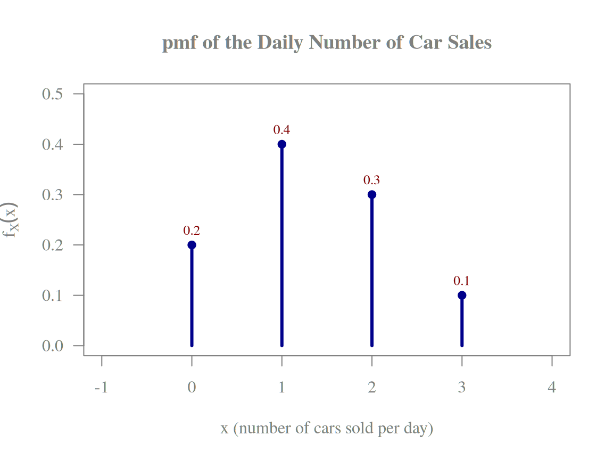
The pmf and the cdf contain the same information.
The cdf \(F_X(x)=P(X\leq x)\) is obtained by summing up the pmf values for all \(x_\ell\) smaller or equal \(x,\)\[
F_X(x)=\sum_{x_k\leq x} f_X(x_k).
\]
For instance, \[
F_X(1)=f_X(0)+f_X(1)=0.2+0.4=0.6.
\]
Conversely, the pmf values are the jump heights of the cdf (see the cdf plot above).
2.2.1.3Density Functions for Continuous Random Variables
A random variable \(X\) is continuous if there exists a function \(f_{X}\) such that
\(f_{X}(x)\geq 0\;\) for all \(x\in\mathbb{R}\),
\(\int_{-\infty}^{\infty}f_{X}(x)\,dx=1,\;\) and
\(P(a<X<b)=\int_{a}^{b} f_{X}(x)\,dx\;\) for all \(a\leq b\).
The function \(f_{X}\) is called the probability density function (pdf), or simply the density function.
Moreover, \[
F_{X}(x)=\int_{-\infty}^{x} f_{X}(t)\,dt
\] and that \[
f_{X}(x)=F_{X}^{\prime}(x)
\] at all points \(x\) at which \(F_{X}\) is differentiable.
Example: pdf of a Continuous Random Variable (Customer Arrivals)
Consider again the waiting time \(X\in[0,\infty)\) (in minutes) until the next customer enters the shop, with cdf \(F_X(x)=1-e^{-x/5}\) for \(x\geq 0\). Differentiating the cdf gives the density function \[
f_X(x)=F_X^{\prime}(x)=\left\{\begin{array}{ll}
0 & \text{for } x<0 \\
\frac{1}{5}\,e^{-x/5} & \text{for } x> 0.
\end{array}\right.
\] (At \(x=0,\) the cdf has a kink and is not differentiable.)
Probabilities are now areas under the density.
For instance, the probability that the next customer arrives within \(5\) minutes is \[\begin{align*}
P(X\leq 5)
&=\int_{0}^{5}\frac{1}{5}\,e^{-x/5}\,dx\\[2ex]
&=\Big[-e^{-x/5}\Big]_{0}^{5}\\[2ex]
&=-e^{-5/5} -\left(-e^{-0/5}\right)\\[2ex]
&=-e^{-1} - (-1) \\[2ex]
&=1-e^{-1}\approx 0.63,
\end{align*}\] which is exactly \(F_X(5)\) from the cdf example above.
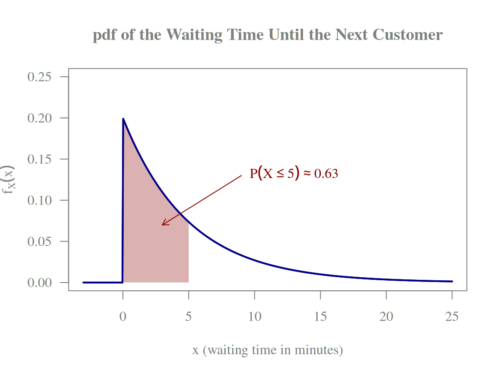
Note that \(f_X(x)\) is not a probability: \[
P(X=x)=0
\] for every single value \(x\). Only areas under \(f_X\) are probabilities.
Note: Density values can be larger than one. In the plot above, we have \(f_X(x)\leq 0.2\) because we measure the waiting time in minutes. If we measured the same waiting time in hours instead, the average waiting time would be \(5/60=1/12\) hours, and the density would be \(f_X(x)=12\,e^{-12x}\) for \(x\geq 0,\) with value \(12=f_X(0)\) at \(x=0.\)
2.2.2 Multivariate Distribution and Probability Functions
A \(d\)-dimensional random vector is a column vector \[
X=
\begin{pmatrix}
X_1\\\vdots\\ X_d
\end{pmatrix}
\] whose elements \(X_j\in\mathbb{R}\), \(j=1,\dots,d\), are univariate random variables.
2.2.2.1Joint Distribution Function
The joint (or multivariate) distribution function\(F\) of \(X\) is given by \[
F(a_1,\dots,a_d)=P(X_1\le a_1,\dots,X_d\le a_d).
\]
It gives us the probability that \(X_1\le a_1\) AND \(X_2\le a_2\) AND \(\dots\) AND \(X_d\le a_d.\)
Example: Joint Distribution Function of a Bivariate Normal Distribution
Consider a firm (or an entire sector, such as retail) whose revenues depend on the business cycle:
\(X_1\) is the firm’s annual revenue growth (in %), with mean \(E(X_1)=2\) and variance \(\operatorname{Var}(X_1)=1\), i.e., a standard deviation of \(1\) percentage point.
\(X_2\) is the annual GDP growth (in %), with mean \(E(X_2)=1\) and variance \(\operatorname{Var}(X_2)=1\), i.e., a standard deviation of \(1\) percentage point. These values are more or less realistic for Germany.
The covariance is \(\operatorname{Cov}(X_1,X_2)=0.8\). That is, the firm’s revenues move closely with the business cycle.
We model the two growth rates jointly. Let \[
X=
\begin{pmatrix}
X_1\\ X_2
\end{pmatrix}\sim\mathcal{N}_2\left(\mu,\Sigma\right)
\] be a bivariate \((d=2)\) normal random vector with mean vector \[
\mu=E(X)
=\begin{pmatrix}
\mu_1\\ \mu_2
\end{pmatrix}
=\begin{pmatrix}
E(X_1)\\ E(X_2)
\end{pmatrix}
=\begin{pmatrix}
2\\ 1
\end{pmatrix}
\] and variance-covariance matrix \[
\Sigma = \operatorname{Var}(X)
=\begin{pmatrix}\operatorname{Var}(X_1)&\operatorname{Cov}(X_1,X_2)\\\operatorname{Cov}(X_1,X_2)&\operatorname{Var}(X_2)\end{pmatrix}
=\begin{pmatrix}1&0.8\\0.8&1\end{pmatrix};
\] see also Section 2.2.7.2.
This bivariate normal distribution serves as our running example for the rest of this chapter.
Its joint distribution function \[\begin{align*}
F(x_1,x_2)
& = P(X_1\leq x_1 \quad \text{AND}\quad X_2\leq x_2)\\[2ex]
& \;\;\text{Short notation (commonly used):}\\[2ex]
& = P(X_1\leq x_1, X_2\leq x_2)
\end{align*}\] can be visualized in two ways:
Perspective plot (left): The joint distribution function is shown as a surface above the \((x_1,x_2)\)-plane. It increases from \(0\) (for small values of \(x_1\) and \(x_2\)) to \(1\) (for large values of \(x_1\) and \(x_2\)).
Contour plot (right): The surface is viewed from above. The contour lines connect all points \((x_1,x_2)\) with the same value of \(F(x_1,x_2)\), just like the contour lines on a hiking map.
For instance, the probability that neither of the random variables \(X_1\) and \(X_2\) exceeds its mean is \[
F(2,1)=P(X_1\leq 2, X_2\leq 1)\approx 0.40.
\] That is, \(F(2,1)\approx 0.40\) is the height of the distribution function surface at the point \((2,1)\). This height equals the probability that \(X\) falls into the shaded lower-left region \(\{x_1\leq 2,\ x_2\leq 1\}\) in the contour plot.
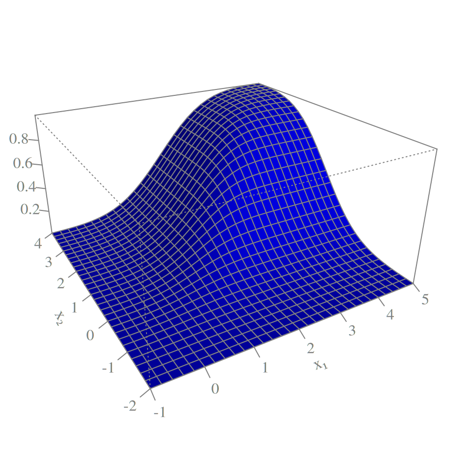
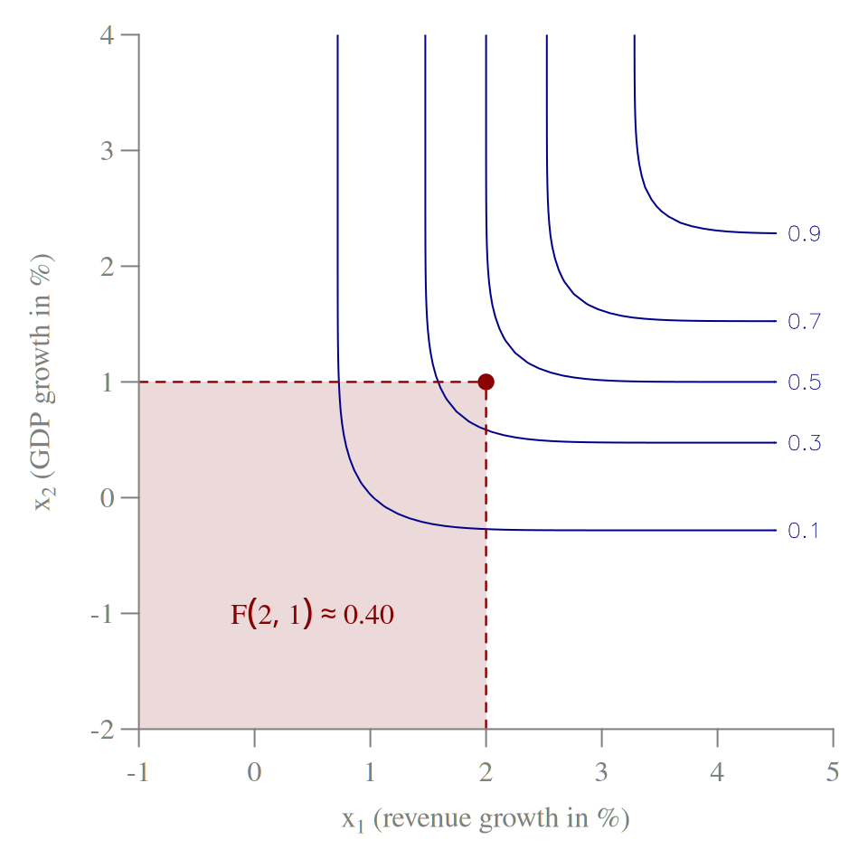
2.2.2.2Joint Probability Mass Function
Discrete random vectors: Let the \(d\)-dimensional random (column) vector \[
X=
\begin{pmatrix}
X_1\\\vdots\\ X_d
\end{pmatrix}
\] collect \(d\)discrete univariate random variables \(X_1,\dots,X_d\).
The discrete random vector \(X\) takes countably many different \(d\)-dimensional values \(x_1,x_2,\dots,x_m\), where, again, \(m=\infty\) is allowed: \[
X=
\begin{pmatrix}
X_1\\\vdots\\ X_d
\end{pmatrix}
\in
\left\{
\smash[b]{\underbrace{\begin{pmatrix}
x_{11}\\\vdots\\ x_{d1}
\end{pmatrix}}_{=x_1}},\;
\smash[b]{\underbrace{\begin{pmatrix}
x_{12}\\\vdots\\ x_{d2}
\end{pmatrix}}_{=x_2}},\;
\dots,\;
\smash[b]{\underbrace{\begin{pmatrix}
x_{1m}\\\vdots\\ x_{dm}
\end{pmatrix}}_{=x_m}}
\right\}
\vphantom{\underbrace{\begin{pmatrix}
x_{11}\\\vdots\\ x_{d1}
\end{pmatrix}}_{=x_1}}.
\]
Example: \(X\) with \(d=2\) and \(m=4\)
For instance, if \(d=2\), \[
X=\begin{pmatrix}X_1 \\ X_2\end{pmatrix},
\] and both \(X_1\) and \(X_2\) take values in \(\{0,1\}\), then \(X\) can take the \(m=4\) different values \[
x_1=\begin{pmatrix}0\\0\end{pmatrix},\quad
x_2=\begin{pmatrix}1\\0\end{pmatrix},\quad
x_3=\begin{pmatrix}0\\1\end{pmatrix},\quad
x_4=\begin{pmatrix}1\\1\end{pmatrix}.
\]
The joint (or multivariate) probability mass function of \(X\) is \[
f_{X}(x)=P(X=x)\quad\text{for all}\quad x\in\{x_1,x_2,\dots,x_m\}.
\]
Example: Two-Dimensional pmf (Car Sales and Staffing)
Consider again the small car dealership. Let
\(X_1\in\{0,1,2,3\}\) be the number of cars sold per day, and
\(X_2\in\{1,2\}\) be the number of sales consultants on duty that day.
The random vector \[
X=\begin{pmatrix}X_1\\ X_2\end{pmatrix}
\] can take \(4\cdot 2=8\) different values. Its two-dimensional pmf \[
f_X(x_1,x_2)=P(X_1=x_1,X_2=x_2)
\] is given by the following table:
\(f_X(x_1,x_2)\)
\(x_1=0\)
\(x_1=1\)
\(x_1=2\)
\(x_1=3\)
\(x_2=1\)
\(0.15\)
\(0.25\)
\(0.10\)
\(0.00\)
\(x_2=2\)
\(0.05\)
\(0.15\)
\(0.20\)
\(0.10\)
All entries are non-negative and they sum to one.
Days with two consultants tend to come with more sales. For instance, the probability of selling at least two cars on a day with two consultants is \[
P(X_1\geq 2, X_2=2)=f_X(2,2)+f_X(3,2)=0.20+0.10=0.30.
\] whereas the probability of selling at least two cars on a day with only one consultant is \[
P(X_1\geq 2, X_2=1)=f_X(2,1)+f_X(3,1)=0.10+0.00=0.10.
\]
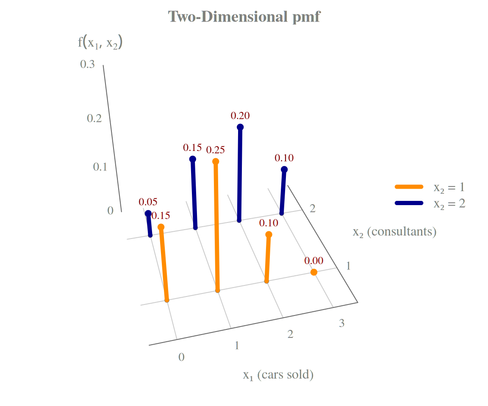
Outlook: Summing the pmf over all values of \(X_2\) for given values of \(X_1\) yields the pmf of \(X_1\) alone. For instance, \[\begin{align*}
P(X_1=0)
&=P(X_1=0,X_2=1)+P(X_1=0,X_2=2)\\[2ex]
&=f_X(0,1)+f_X(0,2)\\[2ex]
&=0.15+0.05=0.20,\\[4ex]
P(X_1=1)
&=P(X_1=1,X_2=1)+P(X_1=1,X_2=2)\\[2ex]
&=f_X(1,1)+f_X(1,2)\\[2ex]
&=0.25+0.15=0.40,
\end{align*}\] and likewise for \(P(X_1=2)\) and \(P(X_1=3)\).
These are exactly the pmf values from the one-dimensional car sales example above. Such marginal distributions are discussed below.
2.2.2.3Joint Density Function
Continuous random vectors:\(X\) takes values in \(\mathbb{R}^d\)
and has a joint (or multivariate) density function\(f(x_1,\dots,x_d)\), i.e., \[\begin{align*}
&P(X\in [a_1,b_1]\times\dots\times [a_d,b_d])\\[2ex]
&=\int_{a_d}^{b_d}\dots \int_{a_1}^{b_1}f(x_1,\dots,x_d)\,dx_1\dots dx_d.
\end{align*}\]
Example: Joint Density of a Bivariate Normal Distribution
Consider again our running example, the bivariate \((d=2)\) normal random vector from above, \[
X=\begin{pmatrix}X_1\\ X_2\end{pmatrix}\sim\mathcal{N}_2\left(\mu,\Sigma\right)
\quad\text{with}\quad
\mu=\begin{pmatrix}2\\ 1\end{pmatrix}
\quad\text{and}\quad
\Sigma=\begin{pmatrix}
1 & 0.8\\
0.8 & 1
\end{pmatrix}.
\] Its joint density function \(f(x_1,x_2)\) can be visualized in two ways:
Perspective plot (left): The joint density is shown as a surface above the \((x_1,x_2)\)-plane. Probabilities are volumes under this surface.
Contour plot (right): The surface is viewed from above. The contour lines connect all points \((x_1,x_2)\) with the same density value, just like the contour lines on a hiking map. Darker areas indicate larger density values.
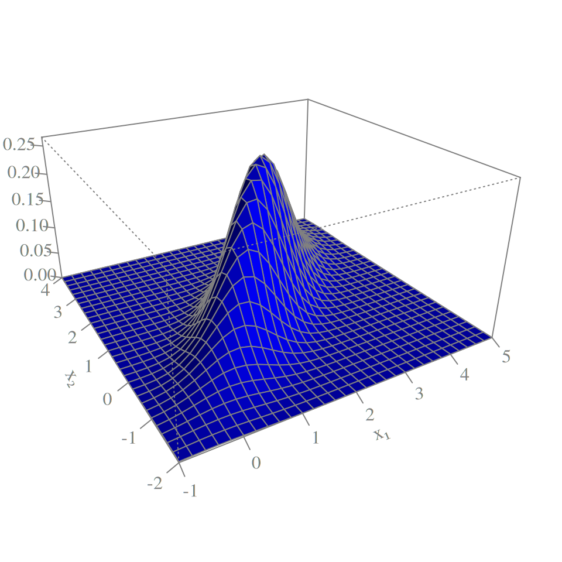
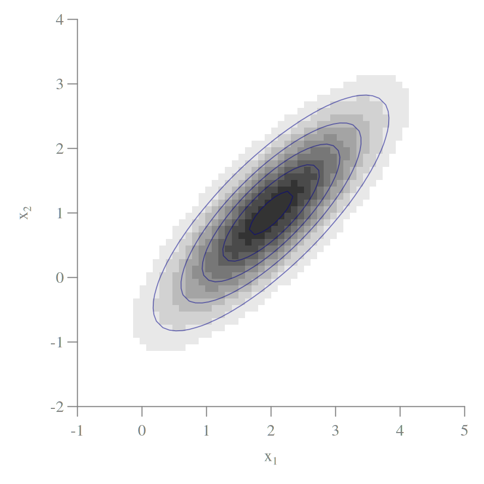
Both plots show that the joint density is centered at the mean vector \(\mu=(2,1)^{\top}\). Since \(\operatorname{Cov}(X_1,X_2)=0.8>0\), the density is stretched along a line with positive slope: large values of \(X_1\) tend to occur together with large values of \(X_2\), and small values with small values. In the following examples, we use the contour plot to visualize this joint density.
Example: Two-Dimensional pdf (Customer Arrivals and Service Times)
Consider again the shop from the one-dimensional pdf example. Let
\(X_1\geq 0\) be the waiting time (in minutes) until the next customer enters the shop, and
\(X_2\geq 0\) be the time (in minutes) the shop assistant needs to serve this customer.
Suppose that the random vector \[
X=\begin{pmatrix}X_1\\ X_2\end{pmatrix}
\] has the following two-dimensional \((d=2)\) density function with
The density is non-negative and it integrates to one: \[\begin{align*}
&\int_{-\infty}^{\infty}\int_{-\infty}^{\infty}f_X(x_1,x_2)\,dx_1\,dx_2\\[2ex]
&=\int_{0}^{\infty}\int_{0}^{\infty}\frac{1}{5}\,e^{-x_1/5}\cdot\frac{1}{2}\,e^{-x_2/2}\,dx_1\,dx_2\\[2ex]
&=\left(\int_{0}^{\infty}\frac{1}{5}\,e^{-x_1/5}\,dx_1\right)\cdot\left(\int_{0}^{\infty}\frac{1}{2}\,e^{-x_2/2}\,dx_2\right)\\[2ex]
&=1\cdot 1=1.
\end{align*}\]
Probabilities are now volumes under the density surface. For instance, the probability that the next customer arrives within \(5\) minutes and is served within \(2\) minutes is \[\begin{align*}
P(X_1\leq 5, X_2\leq 2)
&=\int_{0}^{2}\int_{0}^{5}\frac{1}{5}\,e^{-x_1/5}\cdot\frac{1}{2}\,e^{-x_2/2}\,dx_1\,dx_2\\[2ex]
&=\left(\int_{0}^{5}\frac{1}{5}\,e^{-x_1/5}\,dx_1\right)\cdot\left(\int_{0}^{2}\frac{1}{2}\,e^{-x_2/2}\,dx_2\right)\\[2ex]
&=\Big[-e^{-x_1/5}\Big]_{0}^{5}\cdot\Big[-e^{-x_2/2}\Big]_{0}^{2}\\[2ex]
&=\left(1-e^{-1}\right)\cdot\left(1-e^{-1}\right)\\[2ex]
&\approx 0.63\cdot 0.63\approx 0.40.
\end{align*}\]
The following plot shows the density surface. The red part of the surface lies above the rectangle \([0,5]\times[0,2]\); the volume below it equals \[
P(X_1\leq 5, X_2\leq 2)\approx 0.40.
\]
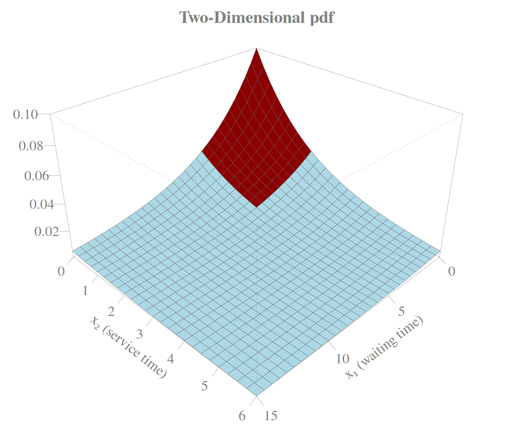
Outlook: In this example, the bivariate density is simply the product of the one-dimensional densities of the waiting time and the service time, \[
f_X(x_1,x_2)=f_1(x_1)\cdot f_2(x_2).
\] This means that \(X_1\) and \(X_2\) are assumed to be independent here, which is reasonable in this example. See the section on independent random variables below.
In the following, we focus on continuous random vectors; the discrete case is treated analogously, with sums instead of integrals.
2.2.2.4Marginal Distribution Functions and Marginal Density Functions
Let \[
X=\left(\begin{matrix}X_{1}\\ X_{2}\\ \vdots \\ X_{d}\end{matrix}\right)\in\mathbb{R}^d.
\] Each element \(X_j,\)\(j=1,\dots,d,\) of the random vector \(X\) has its own marginal distribution\(F_j\). This is simply the univariate distribution of \(X_j\) when ignoring all other random variables in \(X\). Formally:
Marginal distribution function:\(F_j(x)=P(X_j\leq x)\).
Marginal density function:\(f_j\); for instance, for \(j=1\): \[
f_1({\color{blue}{x_1}})=\int_{-\infty}^{\infty}\dots \int_{-\infty}^{\infty}f({\color{blue}{x_1}},x_2,\dots,
x_d)\,dx_2\dots dx_d.
\]
Example: Marginal Densities of a Bivariate Normal Distribution
Consider again our running example, the bivariate \((d=2)\) normal random vector \[
X=\begin{pmatrix}X_1\\ X_2\end{pmatrix}\sim\mathcal{N}_2\left(\mu,\Sigma\right)
\quad\text{with}\quad
\mu=\begin{pmatrix}2\\ 1\end{pmatrix}
\quad\text{and}\quad
\Sigma=\begin{pmatrix}
1 & 0.8\\
0.8 & 1
\end{pmatrix}.
\]
The following plot shows the joint density \(f(x_1,x_2)\) together with its two marginal densities \[\begin{align*}
f_1(x_1)&=\int_{-\infty}^{\infty} f(x_1,x_2)\,dx_2\\[2ex]
f_2(x_2)&=\int_{-\infty}^{\infty} f(x_1,x_2)\,dx_1
\end{align*}\]
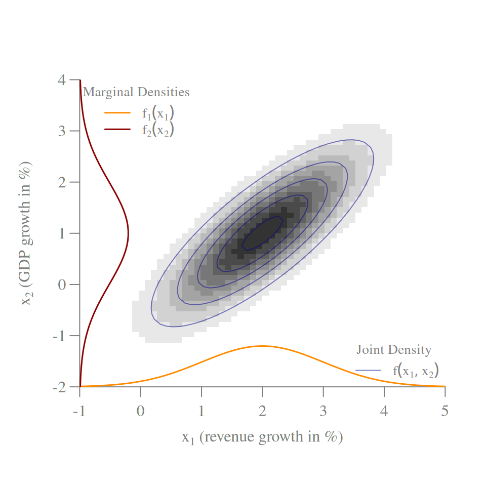
2.2.2.5Conditional Density Function
Often, we are interested in the conditional distribution of \(X_j\) given fixed values of all other random variables, \[
X_1=x_1,\ldots, X_{j-1}=x_{j-1}, X_{j+1}=x_{j+1},\ldots,X_d=x_d.
\] That is, the distribution of \(X_j\) when the values of all other random variables are held fixed.
An important tool here is the conditional density. For instance, the conditional density of \(X_1\) given \(X_2=x_2,\ldots,X_d=x_d\) is \[
f(x_1\mid x_2,\ldots,x_d)=\frac{f(x_1,x_2,\ldots,x_d)}{f_{X_{2},\ldots,X_{d}}(x_2,\ldots,x_d)},
\] where \(f_{X_{2},\ldots,X_{d}}\) denotes the joint density of \(X_2,\ldots,X_d,\) and where we assume that \(f_{X_{2},\ldots,X_{d}}(x_2,\ldots,x_d)>0\).
Example: Conditional Density of a Bivariate \((d=2)\) Normal Distribution
Consider again our running example, the bivariate \((d=2)\) normal random vector \[
X=\begin{pmatrix}X_1\\ X_2\end{pmatrix}\sim\mathcal{N}_2\left(\mu,\Sigma\right)
\quad\text{with}\quad
\mu=\begin{pmatrix}2\\ 1\end{pmatrix}
\quad\text{and}\quad
\Sigma=\begin{pmatrix}
1 & 0.8\\
0.8 & 1
\end{pmatrix}.
\]
The conditional density of \(X_1\) given \(X_2=2\) is the joint density divided by the marginal density of \(X_2\), both evaluated at \(x_2=2\): \[
f(x_1\mid x_2=2)=\frac{f(x_1,2)}{f_2(2)}.
\] For the bivariate normal distribution, this conditional density is again a normal density. Here, \[
X_1\mid X_2=2\;\sim\;\mathcal{N}\left(2.8,\;0.36\right),
\] where \[\begin{align*}
E(X_1\mid X_2=2) &=2.8\\[2ex]
\operatorname{Var}(X_1\mid X_2=2)&=0.36.
\end{align*}\]
The following plot shows the conditional density \(f(x_1\mid x_2=2)\) (dashed green) together with the marginal densities (gray).
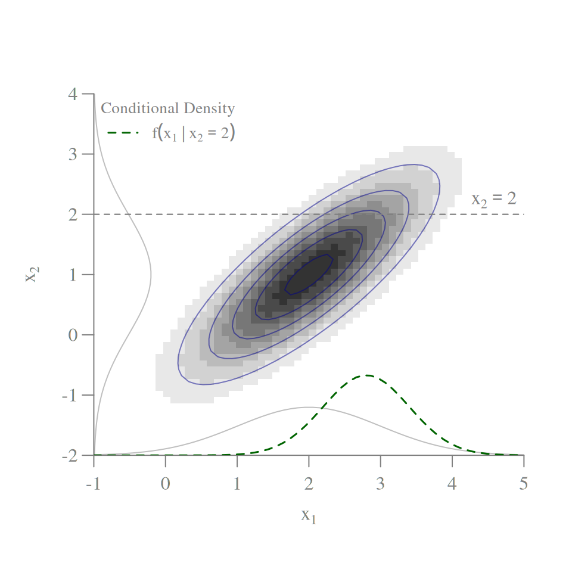
Interpretation: Since \(X_1\) and \(X_2\) are positively correlated, knowing that \(X_2=2\) also tells us something about the random variable \(X_1\).
Because \(X_2=2\) lies above its mean \(E(X_2)=1\), the distribution of \(X_1\) shifts towards larger values: its mean increases from \(E(X_1)=2\) to \(E(X_1\mid X_2=2)=2.8\).
Moreover, knowing that \(X_2=2\) reduces the uncertainty about \(X_1\): its variance shrinks from \(\operatorname{Var}(X_1)=1\) to \(\operatorname{Var}(X_1\mid X_2=2)=0.36\).
Therefore, compared to the marginal density \(f_1(x_1)\), the conditional density \(f(x_1\mid x_2=2)\) is shifted to the right, and it is narrower and taller.
2.2.3 Means and Moments
2.2.3.1Unconditional Means
The unconditional mean of \(X_1\) is given by \[
E(X_1)= \int x f_{X_1}(x)\,dx.
\] The unconditional mean of a random vector \[
X=
\begin{pmatrix}
X_1\\ \vdots \\ X_d
\end{pmatrix}
\] is given by the vector of element-wise means, \[
E(X)=
\begin{pmatrix}
E(X_1)\\ \vdots\\ E(X_d)
\end{pmatrix}.
\]
Example: Unconditional Means of a Bivariate Normal Distribution
Consider again our running example, the bivariate \((d=2)\) normal random vector \[
X=\begin{pmatrix}X_1\\ X_2\end{pmatrix}\sim\mathcal{N}_2\left(\mu,\Sigma\right)
\quad\text{with}\quad
\mu=\begin{pmatrix}2\\ 1\end{pmatrix}
\quad\text{and}\quad
\Sigma=\begin{pmatrix}
1 & 0.8\\
0.8 & 1
\end{pmatrix}.
\]
The marginal distributions are \(X_1\sim\mathcal{N}(2,1)\) and \(X_2\sim\mathcal{N}(1,1)\). Thus, the unconditional means are \[\begin{align*}
E(X_1)&=\int_{-\infty}^{\infty} x_1\, f_1(x_1)\,dx_1=2\\[2ex]
E(X_2)&=\int_{-\infty}^{\infty} x_2\, f_2(x_2)\,dx_2=1,
\end{align*}\] and the unconditional mean of the random vector \(X\) is \[
E(X)=
\begin{pmatrix}
E(X_1)\\ E(X_2)
\end{pmatrix}
=
\begin{pmatrix}
2\\ 1
\end{pmatrix}.
\]
The following plot shows the joint density \(f(x_1,x_2)\) together with its two marginal densities. The unconditional means \(E(X_1)\) and \(E(X_2)\) are the centers of the marginal densities, and the mean vector \(E(X)\) (red dot) is the center of the joint density.
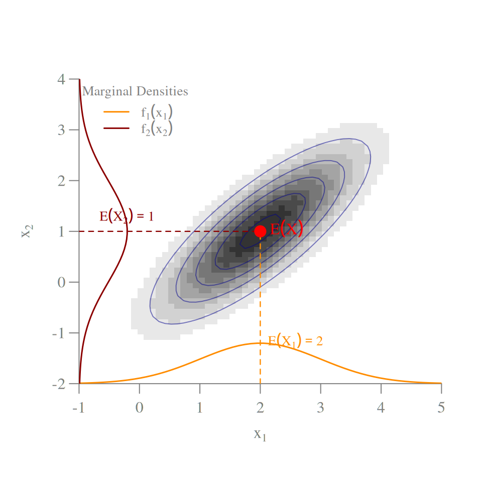
2.2.3.2Means of Transformed Random Variables and Moments
The mean of a transformed random variable\(r(X)\) is given by \[
E(r(X))=\int r(x) f_{X}(x)\,dx.
\] Typical transformations are, for instance,
centering: \(r(x)=x-E(X)\),
centering and scaling: \(r(x)=(x-E(X))/\sqrt{\operatorname{Var}(X)}\),
squared deviations: \(r(x)=(x - E(X))^2\),
where the latter transformation leads to the second central moment, i.e., the variance of \(X\), \[
\operatorname{Var}(X)=\int (x - E(X))^2 f_{X}(x)\,dx.
\]
The \(k\)th moment, \(k=1,2,\dots\), is given by \[
\mu_{k}=E\left(X^{k}\right)=\int_{-\infty}^{+\infty}x^{k} f_X(x)\,d x.
\]
The \(k\)th central moment, \(k=2,3,\dots\), is given by \[
\mu^c_{k}=E\left((X-\mu)^{k}\right)=\int_{-\infty}^{+\infty}(x-\mu)^{k} f_X(x)\,d x,
\] where \(\mu=E(X)\).
Of course, these moments are only defined if the respective integrals exist, i.e., if \(E(|X|^k)<\infty\).
Note: As the title of Lindsay and Basak (2000) puts it, “moments determine the tail of a distribution (but not much else)”. Roughly: the more moments a distribution has, the faster its tails decay to zero. Distributions with compact support (e.g., the uniform distribution \(\mathcal{U}(a,b)\)) have moments of all orders. The normal distribution also has moments of all orders, even though it does not have compact support; see Section 2.2.7.2.
2.2.3.3Conditional Means ➡️ Regression Functions
The conditional mean of \(X_1\) given \(X_2=x_2,\ldots,X_d=x_d\) is \[\begin{align*}
m(x_2,\dots,x_d):&=E(X_1\mid X_2=x_2,\ldots,X_d=x_d)\\[2ex]
&= \int x_1 f(x_1\mid x_2,\ldots,x_d)\,dx_1.
\end{align*}\] The function \(m\) is called the regression function. It is the central object of regression analysis, which we discuss in the following chapters.
Example: Conditional Mean Function of a Bivariate Normal Distribution
Consider again our running example, the bivariate \((d=2)\) normal random vector \[
X=\begin{pmatrix}X_1\\ X_2\end{pmatrix}\sim\mathcal{N}_2\left(\mu,\Sigma\right)
\quad\text{with}\quad
\mu=\begin{pmatrix}2\\ 1\end{pmatrix}
\quad\text{and}\quad
\Sigma=\begin{pmatrix}
1 & 0.8\\
0.8 & 1
\end{pmatrix}.
\]
For the bivariate normal distribution, the conditional mean of \(X_1\) given \(X_2=x_2\) is a linear function of \(x_2\): \[\begin{align*}
m(x_2)
&=E(X_1\mid X_2=x_2)\\[2ex]
&=E(X_1)+\frac{\operatorname{Cov}(X_1,X_2)}{\operatorname{Var}(X_2)}\,\big(x_2-E(X_2)\big)\\[2ex]
&=2+\frac{0.8}{1}\,(x_2-1)\\[2ex]
&=1.2+0.8\,x_2.
\end{align*}\] Thus, the regression function \(m\) is a straight line with intercept \(1.2\) and slope \(0.8\). For instance, \[\begin{align*}
m(0)&=1.2+0.8\cdot 0=1.2\\[2ex]
m(1)&=1.2+0.8\cdot 1=2.0\\[2ex]
m(2)&=1.2+0.8\cdot 2=2.8\\[2ex]
m(3)&=1.2+0.8\cdot 3=3.6.
\end{align*}\] The value \(m(2)=2.8\) is the conditional mean \(E(X_1\mid X_2=2)\) from the conditional density example above.
The left plot shows the conditional densities \(f(x_1\mid x_2)\) for \(x_2=0,1,2,3\) (green). Each conditional density is centered at its conditional mean \(m(x_2)\) (red dots). The red line connects all conditional means; this is the regression function \(m\). The dashed blue line is the main axis of the contour ellipses. The right plot shows the same regression function in the usual way, with \(x_2\) on the horizontal axis.
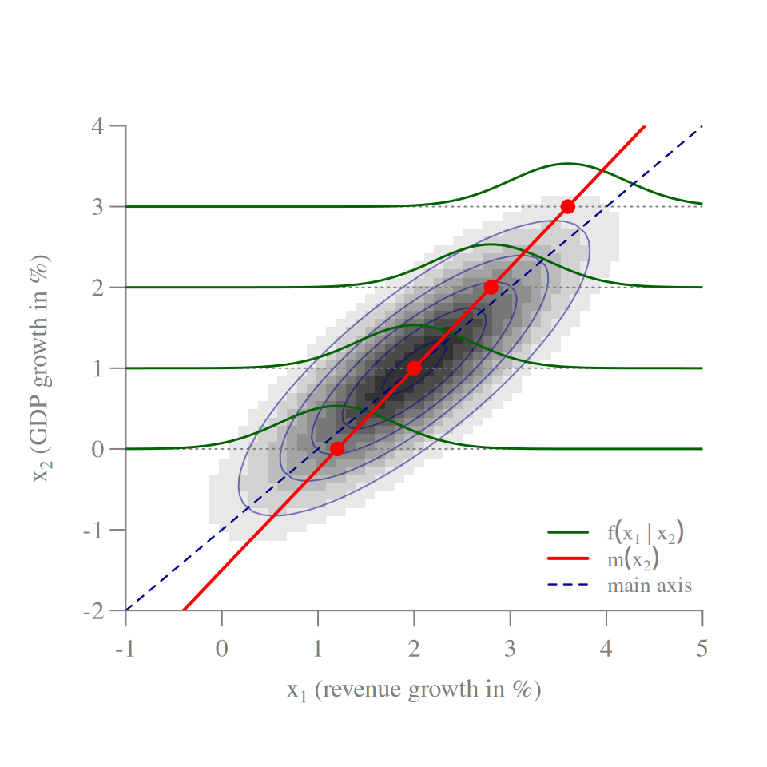
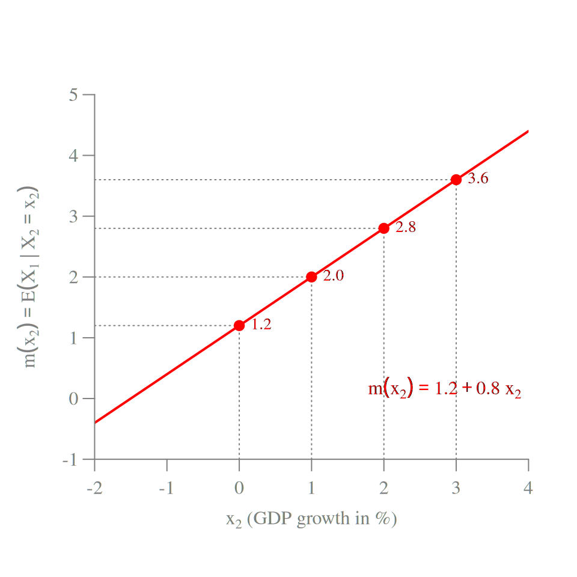
Interpretation: Since \(X_1\) and \(X_2\) are positively correlated, larger values of \(X_2\) come with larger conditional means of \(X_1\). Each additional unit of \(x_2\) increases the conditional mean of \(X_1\) by \(0.8\) units. Note that only the location of the conditional density changes with \(x_2\); its variance is always \(\operatorname{Var}(X_1\mid X_2=x_2)=0.36\).
Note: The regression line is not the main axis of the contour ellipses (dashed blue line). The regression line goes through the conditional means \[
m(x_2)=E(X_1\mid X_2=x_2),
\] i.e., through the centers of the conditional distributions of \(X_1\) along each horizontal line at height \(x_2\).
In our example, the main axis of the contour ellipses moves one-to-one: one unit up in \(x_2\) means one unit to the right in \(x_1\). The conditional mean \(m(x_2)\), however, moves only \(0.8\) units to the right per unit of \(x_2\). Therefore, the regression line is steeper than the main axis in the left plot.
2.2.3.4Law of Total Expectation \(=\) Law of Iterated Expectations
As long as we do not fix the values of the conditioning variables \(X_2,\dots,X_d\), they are random variables. Consequently, the conditional mean \[
E(X_1\mid X_2,\ldots,X_d)=\int x_1 f(x_1\mid X_2,\ldots,X_d)\,dx_1
\] is generally itself a random variable, due to the randomness in \(X_2,\ldots,X_d\).
Theorem 2.1 (Law of Total Expectation) The Law of Total Expectation, also called the Law of Iterated Expectations, states that \[
E\big(E(X_1\mid X_2,\ldots,X_d)\big)=E(X_1).
\]
🤓 Nerd’s Box: Proof of the Law of Total Expectation
To show this result, we first compute the conditional mean of \(X_1\) given \(X_2,\dots,X_d\), and then take the mean with respect to \(X_2,\dots,X_d\): \[\begin{align*}
&E\big({\color{purple}{E(X_1\mid X_2,\ldots,X_d)}}\big)\\[2ex]
&\text{Applying the inner mean ${\color{purple}{E\Big(\dots\Big)}}$ operation:}\\[2ex]
&={\color{darkgreen}{E\Big(}}\;{\color{purple}{\int x_1 f(x_1\mid X_2,\ldots,X_d)\,dx_1}}\;{\color{darkgreen}{\Big)}}\\[2ex]
&\text{Applying the outer mean ${\color{darkgreen}{E\Big(\dots\Big)}}$ operation:}\\[2ex]
&={\color{darkgreen}{\int\dots\int}}\;\int x_1 f(x_1\mid {\color{darkgreen}{x_2,\ldots,x_d}})\,dx_1\;{\color{darkgreen}{f_{X_2,\dots,X_d}(x_2,\ldots,x_d)\,dx_2\dots dx_d}}\\[2ex]
&\text{Using that (by the definition of the conditional density):}\\[2ex]
&{\color{gray}{f(x_1\mid x_2,\ldots,x_d)\,f_{X_2,\dots,X_d}(x_2,\ldots,x_d)=f(x_1,x_2,\ldots,x_d)}}\\[2ex]
&=\int\dots\int x_1 f(x_1,x_2,\ldots,x_d)\,dx_1\,dx_2\dots dx_d\\[2ex]
&\text{Rearranging terms:}\\[2ex]
&=\int x_1 \left({\color{blue}{\int\dots\int f(x_1,x_2,\ldots,x_d)\,dx_2\dots dx_d}}\right)dx_1\\[2ex]
&\text{Integrating out $x_2,\dots,x_d$ yields the marginal density $f_{X_1}\colon$}\\[2ex]
&=\int x_1 {\color{blue}{f_{X_1}(x_1)}}\,dx_1\\[2ex]
&=E(X_1)
\end{align*}\]
2.2.4 Independent Random Variables
Two random variables: Two random variables \(Y\) and \(X\) are independent, written \[
Y \independent X,
\] if their joint distribution function equals the product of their marginal distribution functions, \[
F_{Y,X}(y,x)=F_Y(y)\cdot F_X(x)\quad\text{for all}\quad y,x\in\mathbb{R}.
\] Equivalently, \(Y\) and \(X\) are independent if their joint pmf (discrete case) or joint density function (continuous case) equals the product of their marginal pmfs or densities, \[
f_{Y,X}(y,x)=f_Y(y)\cdot f_X(x)\quad\text{for all}\quad y,x\in\mathbb{R}.
\]
Independence can also be characterized using the conditional density:\(Y\) and \(X\) are independent if and only if the marginal density of \(X\) equals the conditional density of \(X\) given \(Y=y\), \[
f_X(x)=f_{X|Y}(x\mid y)
\] for all \(x\in\mathbb{R}\) and all \(y\in\mathbb{R}\) with \(f_Y(y)>0\). That is, knowing the value of \(Y\) does not change the distribution of \(X\).
Of course, the same holds with the roles of \(X\) and \(Y\) interchanged: \(X\) and \(Y\) are independent if and only if\(f_Y(y)=f_{Y|X}(y\mid x)\) for all \(y\in\mathbb{R}\) and all \(x\) with \(f_X(x)>0.\)
More than two random variables: The random variables \(X_1,\dots,X_n\) are mutually independent if their joint distribution function equals the product of their marginal distribution functions, \[
F(x_1,\dots,x_n)=F_1(x_1)\cdot F_2(x_2)\cdot\ldots\cdot F_n(x_n),
\] for all \((x_1,\dots,x_n)^{\top}\in\mathbb{R}^n,\) or, equivalently, if their joint pmf or joint density function equals the product of their marginal pmfs or densities, \[
f(x_1,\dots,x_n)=f_1(x_1)\cdot f_2(x_2)\cdot\ldots\cdot f_n(x_n)
\] for all \((x_1,\dots,x_n)^{\top}\in\mathbb{R}^n.\)
Independence Implies Mean Independence (but Not Vice Versa)
If \(X\) and \(Y\) are independent, then the conditional mean of \(X\) given \(Y=y\) equals the unconditional mean of \(X\), \[
E(X\mid Y=y)=E(X)\quad\text{for all } y,
\] and, likewise, the conditional mean of \(Y\) given \(X=x\) equals the unconditional mean of \(Y\), \[
E(Y\mid X=x)=E(Y)\quad\text{for all } x.
\] If \[
E(X\mid Y=y)=E(X)
\] for all \(y\), we say that \(X\) is mean independent of \(Y.\)
🚨 Caution: The Converse Is Not True
If the conditional mean equals the unconditional mean, \[
E(X\mid Y=y)=E(X)\quad\text{for all } y,
\] then this does not imply that \(X\) and \(Y\) are independent. (Likewise for \(E(Y\mid X=x)=E(Y)\) for all \(x\).)
It only means that \(Y\) has no effect on the mean of \(X\). However, \(Y\) may still affect other properties of the distribution of \(X\), for instance, its variance.
Example:
Let \(Y\in\{1,2\}\) and
let \(X\mid Y=y\sim\mathcal{N}(0,y^2)\).
Then \[
E(X\mid Y=y)=0=E(X)\quad\text{for all } y,
\] but \(X\) and \(Y\) are not independent, since \[
\operatorname{Var}(X\mid Y=1)=1\neq 4=\operatorname{Var}(X\mid Y=2).
\]
2.2.5 Random Samples
By convention, the sample size is denoted by \(n\); for instance, \(n=526\) for a survey dataset with responses from \(526\) individuals.
Definition 2.1 (Random Sample) A collection of random variables \[
\{X_{1}, \ldots, X_{n}\}
\] is called a random sample if its random variables are i.i.d. (independent and identically distributed), i.e., if
\(X_{1}, \ldots, X_{n}\) are mutually independent, and
\(X_{1}, \ldots, X_{n}\) have identical marginal distributions, i.e., \(X_i\sim F_X\) for all \(i=1,\dots,n\).
We regard the collected data as an observed realization \[
\{X_{1,\operatorname{obs}}, \ldots, X_{n,\operatorname{obs}}\}
\] of an underlying random sample \[
\{X_{1}, \ldots, X_{n}\}.
\]
Example: Univariate Random Sample
A shop randomly selects \(n=10\) customers and records how much each of them spends (in Euro). Suppose the shop observes the following data:
We assume that these data are an observed realization of an i.i.d. random sample\[
\{X_{1}, \ldots, X_{10}\},
\] where the random variable \(X_i\) models the spending of customer \(i\). That is,
\(X_{1}, \ldots, X_{10}\) are mutually independent (the spending of customer \(i\) does not affect the spending of customer \(j\neq i\)), and
\(X_{1}, \ldots, X_{10}\) have identical marginal distributions, i.e., \(X_i\sim F_X\) for all \(i=1,\dots,10\).
Typically, however, we do not know the underlying distribution \(F_X\). In fact, this is the whole point: we want to use the observed data \[
\{X_{1,\operatorname{obs}}, \ldots, X_{10,\operatorname{obs}}\}
\] to learn (i.e., to estimate) certain aspects of the unknown distribution \(F_X\), for instance, the mean spending \(\mu=E(X_i)\) of the shop’s customers.
Note that the observed data are just one possible realization of the random sample \[
\{X_{1}, \ldots, X_{10}\}.
\] If the shop had selected ten other customers, it would have observed different numbers. The random variables \(X_1,\dots,X_{10}\) describe all the data we could have observed; the observed data are the one realization we happened to observe.
The following animation shows the observed data (first frame) together with further possible realizations of the same random sample.
The dashed line shows the true (usually unknown) mean \(\mu=E(X_i)=50\).
The solid line shows the estimate of \(\mu\) computed from the respective realization, i.e., the average of its ten data points, \[\begin{align*}
\hat\mu
&= \frac{1}{n}\left(X_1+X_2+\dots+X_n\right)\\[2ex]
&= \frac{1}{n}\sum_{i=1}^n X_i.
\end{align*}\]
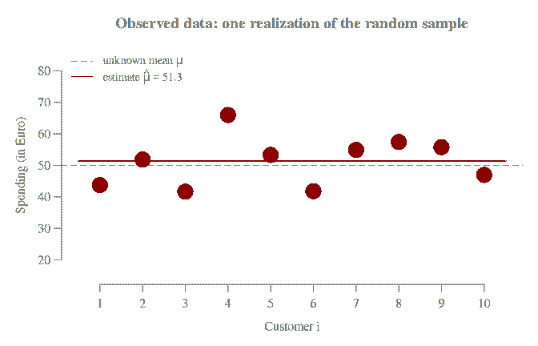
The data points jump around from realization to realization, and so does their average \[
\hat\mu = \frac{1}{n}\sum_{i=1}^n X_i.
\] However, the averages always stay close to the unknown mean \(\mu\). This is why the observed data allow us to learn about the unknown distribution \(F_X\). How to do this well is the topic of estimation, which we discuss in the following chapters.
🤓 Nerd’s Box: Estimator vs. Estimate
Strictly speaking, we need to distinguish between an estimator and an estimate:
The estimator\[
\hat\mu=\frac{1}{n}\sum_{i=1}^n X_i
\] is a function of the random variables \(X_1,\dots,X_n\) and is, therefore, itself a random variable. It describes all the values of the average that we could have observed.
The estimate\[
\hat\mu_{\operatorname{obs}}=\frac{1}{n}\sum_{i=1}^n X_{i,\operatorname{obs}}
\] is the value of the estimator computed from the observed data \(\{X_{1,\operatorname{obs}}, \ldots, X_{n,\operatorname{obs}}\}\). It is a fixed number; in the shop example, \(\hat\mu_{\operatorname{obs}}=51.3\).
Each frame of the animation above shows one realization of the estimator \(\hat\mu\). That is, the estimate \(\hat\mu_{\operatorname{obs}}\) is just one possible realization of the random estimator \(\hat\mu\).
The i.i.d. random sample is the simplest sampling scheme, and it serves as the default sampling scheme in many fields, such as economics and business administration.
However, whether an i.i.d. random sample is a realistic assumption depends on the specific application. For instance, in time-series applications (e.g., forecasting stock market returns), the independence assumption is usually unrealistic.
2.2.6 Some Important Discrete Random Variables
2.2.6.1The Discrete Uniform Distribution
Let \(k>1\) be a given integer. Suppose that \(X\) has the probability mass function \[
f(x)=\left\{\begin{array}{ll}
1 / k & \text { for } x=1, \ldots, k \\
0 & \text { otherwise. }
\end{array}\right.
\] We say that \(X\) has a uniform distribution on \(\{1, \ldots, k\}\).
set.seed(51)## Set the parameter kk<-10## Draw one realization from the discrete uniform distributionsample(x =1:k, size =1, replace =TRUE)
[1] 7
2.2.6.2The Bernoulli Distribution
Let \(X\) represent a possibly unfair coin flip. Then \(P(X=1)=p\) and \(P(X=0)=1-p\) for some \(p \in[0,1]\). We say that \(X\) has a Bernoulli distribution, written \(X\sim\operatorname{Bernoulli}(p)\). The probability mass function is \(f(x)=p^{x}(1-p)^{1-x}\) for \(x \in\{0,1\}\) (and \(f(x)=0\) otherwise).
set.seed(51)## Set the parameter pp<-0.25## Draw n realizations from the Bernoulli distributionn<-5sample(x =c(0,1), size =n, prob =c(1-p, p), replace=TRUE)
Suppose we have a coin that lands heads with probability \(p\) for some \(p\in[0,1]\). Flip the coin \(n\) times, and let \(X\) be the number of heads (or successes). Assume that the tosses are independent. Let \(f(x)=P(X=x)\) be the probability mass function. It can be shown that \[
f(x)=\left\{
\begin{array}{ll}
\left(\begin{array}{l}
n \\
x
\end{array}\right) p^{x}(1-p)^{n-x} & \text { for } x=0, \ldots, n \\
0 & \text { otherwise. }
\end{array}\right.
\] A random variable with this probability mass function is called a binomial random variable, and we write \(X \sim \operatorname{Binomial}(n, p)\).
If \(X_{1} \sim \operatorname{Binomial}\left(n_1, p\right)\) and \(X_{2} \sim \operatorname{Binomial}\left(n_2, p\right)\) are independent, then \[
X_{1}+X_{2} \sim \operatorname{Binomial}\left(n_1 + n_2, p\right).
\]
set.seed(51)## Set the parameters n and psize<-10# number of trialsp<-0.25# prob of success## Draw n realizations from the binomial distribution:n<-5rbinom(n =n, size =size, prob =p)
[1] 4 1 2 6 1
2.2.7 Some Important Continuous Random Variables
2.2.7.1The Uniform Distribution
\(X\) has a \(\operatorname{Uniform}(a, b)\) distribution, written \(X\sim \mathcal{U}(a, b),\) if \[
f(x)=\left\{\begin{array}{ll}
\frac{1}{b-a} & \text { for } x \in[a, b] \\
0 & \text { otherwise, }
\end{array}\right.
\] where \(a<b\). The distribution function is \[
F(x)=\left\{\begin{array}{ll}
0 & x<a \\
\frac{x-a}{b-a} & x \in[a, b] \\
1 & x>b.
\end{array}\right.
\]
## Drawing from the uniform distribution:n<-10a<-0b<-1runif(n =n, min =a, max =b)
\(X\) has a normal (or Gaussian) distribution with parameters \(\mu\) and \(\sigma,\) denoted by \(X \sim \mathcal{N}\left(\mu, \sigma^{2}\right),\) if \[
f(x)=\frac{1}{\sigma \sqrt{2 \pi}} \exp \left\{-\frac{1}{2 \sigma^{2}}(x-\mu)^{2}\right\}, \quad x \in \mathbb{R},
\] where \(\mu \in \mathbb{R}\) and \(\sigma>0.\) Later, we shall see that \(\mu\) is the “center” (or mean) of the distribution and \(\sigma\) is the “spread” (or standard deviation) of the distribution. The normal distribution plays an important role in probability and statistics. Many phenomena in nature have approximately normal distributions. The Central Limit Theorem gives the normal distribution a special role: it states that the distribution of (suitably standardized) averages of i.i.d. random variables with finite variance can be approximated by a normal distribution.
We say that \(X\) has a standard normal distribution if \(\mu=0\) and \(\sigma=1\). By convention, a standard normal random variable is denoted by \(Z\). The pdf and cdf of a standard normal random variable are denoted by \(\phi(z)\) and \(\Phi(z)\). There is no closed-form expression for \(\Phi\). Here are some useful facts:
If \(X \sim \mathcal{N}\left(\mu, \sigma^{2}\right),\) then \(Z=(X-\mu) / \sigma \sim \mathcal{N}(0,1)\).
If \(Z \sim \mathcal{N}(0,1),\) then \(X=\mu+\sigma Z \sim \mathcal{N}\left(\mu, \sigma^{2}\right)\).
If \(X_{i} \sim \mathcal{N}\left(\mu_{i}, \sigma_{i}^{2}\right),\)\(i=1, \ldots, n,\) are independent, then \[
\sum_{i=1}^{n} X_{i} \sim \mathcal{N}\left(\sum_{i=1}^{n} \mu_{i}, \sum_{i=1}^{n} \sigma_{i}^{2}\right).
\]
The following R code plots the standard normal density function:
# draw a plot of the N(0,1) pdfcurve(dnorm(x), xlim =c(-3.5, 3.5), ylab ="Density", main ="Standard Normal Density Function")
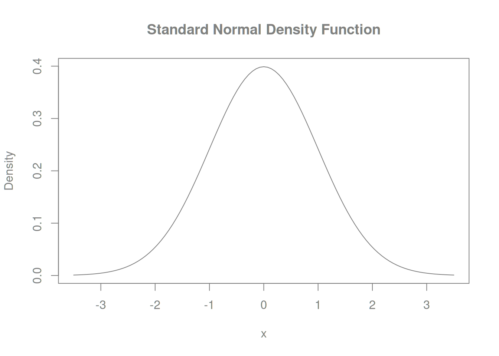
This is how you can draw realizations of pseudo-random normal variables:
## Drawing from the normal distribution:n<-12mu<-0sigma<-1rnorm(n =n, mean =mu, sd =sigma)
The multivariate normal distribution extends the univariate normal distribution to random vectors. Let \(X=(X_1,\dots,X_k)^{\top}\) be a \(k\)-dimensional normal random vector, written \(X\sim \mathcal{N}_k(\mu,\Sigma)\), with mean vector \(E(X)=\mu\in\mathbb{R}^k\) and positive definite variance-covariance matrix \(\operatorname{Var}(X)=\Sigma\). The joint density function of the \(k\)-dimensional normal distribution is \[
f_{X}\left(x_{1}, \ldots, x_{k}\right)=\frac{\exp \left(-\frac{1}{2}(x-\mu)^{\top} \Sigma^{-1}(x-\mu)\right)}{\sqrt{(2 \pi)^{k}|\Sigma|}},
\] where \(x=(x_1,\dots,x_k)^{\top}\) and \(|\Sigma|\) denotes the determinant of \(\Sigma\). For \(k=2\), we obtain the bivariate density of two normal random variables, say \(X\) and \(Y\), with means \(\mu_X\) and \(\mu_Y\), standard deviations \(\sigma_X\) and \(\sigma_Y\), and correlation \(\rho_{XY}\): \[\begin{align*}
g_{X,Y}(x,y) = &\frac{1}{2\pi\sigma_X\sigma_Y\sqrt{1-\rho_{XY}^2}} \\[2ex]
& \cdot \, \exp \left\{ -\frac{1}{2(1-\rho_{XY}^2)} \left[ \left( \frac{x-\mu_X}{\sigma_X} \right)^2 - 2\rho_{XY}\left( \frac{x-\mu_X}{\sigma_X} \right)\left( \frac{y-\mu_Y}{\sigma_Y} \right) + \left( \frac{y-\mu_Y}{\sigma_Y} \right)^2 \right] \right\}.
\end{align*}\] Let’s consider the special case where \(X\) and \(Y\) are independent standard normal random variables with densities \(f_X(x)\) and \(f_Y(y)\). Then \(\sigma_X = \sigma_Y = 1\) and \(\mu_X=\mu_Y=0\) (due to marginal standard normality), and the correlation is \(\rho_{XY}=0\) (due to independence). The joint density of \(X\) and \(Y\) then becomes \[
g_{X,Y}(x,y) = f_X(x) f_Y(y) = \frac{1}{2\pi} \cdot \exp \left\{ -\frac{1}{2}\left[x^2 + y^2\right]\right\}.
\]
2.2.7.3The Chi-Squared Distribution
The chi-squared distribution is another important distribution in econometrics. We need it, for instance, to test hypotheses in regression models.
The sum of \(\nu\in\{1,2,\dots\}\) squared independent standard normal random variables \(Z_1,\dots,Z_\nu\) follows a chi-squared distribution with \(\nu\) degrees of freedom (df): \[
W:=Z_1^2 + \dots + Z_\nu^2 = \sum_{j=1}^\nu Z_j^2 \sim \chi^2_{\nu}.
\] A \(\chi^2_\nu\) distributed random variable \(W\) has expectation \(E(W)=\nu\), variance \(\operatorname{Var}(W)=2\nu,\) and, for \(\nu \geq 2,\) its mode at \(\nu-2\).
Using the code below, we can display the pdf and the cumulative distribution function (cdf) of a \(\chi^2_3\) random variable in a single plot. This is achieved by setting the argument add = TRUE in the second call of curve(). Furthermore, we adjust the limits of both axes using xlim and ylim, and choose different colors to make both functions easier to distinguish. Finally, we add a legend using legend().
# plot the pdfcurve(dchisq(x, df =3), xlim =c(0, 10), ylim =c(0, 1), col ="blue", ylab ="", main ="pdf and cdf of Chi-Squared Distribution (df = 3)")# add the cdf to the plotcurve(pchisq(x, df =3), xlim =c(0, 10), add =TRUE, col ="red")# add a legend to the plotlegend("topleft",c("pdf", "cdf"), col =c("blue", "red"), lty =c(1, 1))
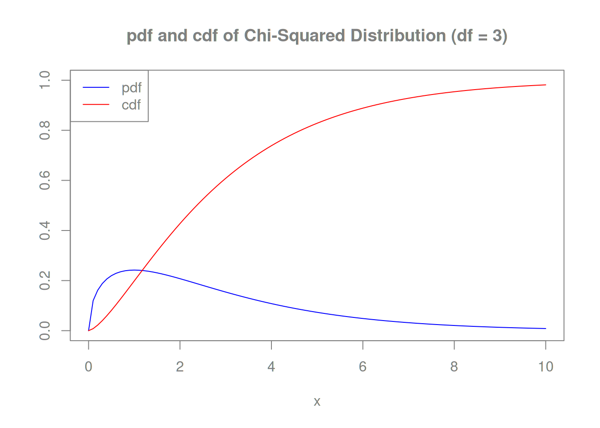
Since a \(\chi^2_\nu\) distributed random variable is a sum of squares, it is never negative; the support of its pdf and cdf is \(\mathbb{R}_{\geq 0}\).
The \(\chi^2_\nu\) distribution depends solely on the degrees of freedom \(\nu\), and its shape changes drastically as we vary \(\nu\).
# plot the density for M=1curve(dchisq(x, df =1), xlim =c(0, 15), xlab ="x", ylab ="Density", main ="Chi-Square Distributed Random Variables")# add densities for M=2,...,7 to the plot using a 'for()' loopfor(Min2:7){curve(dchisq(x, df =M), xlim =c(0, 15), add =T, col =M)}# add a legendlegend("topright",as.character(1:7), col =1:7 , lty =1, title ="df")
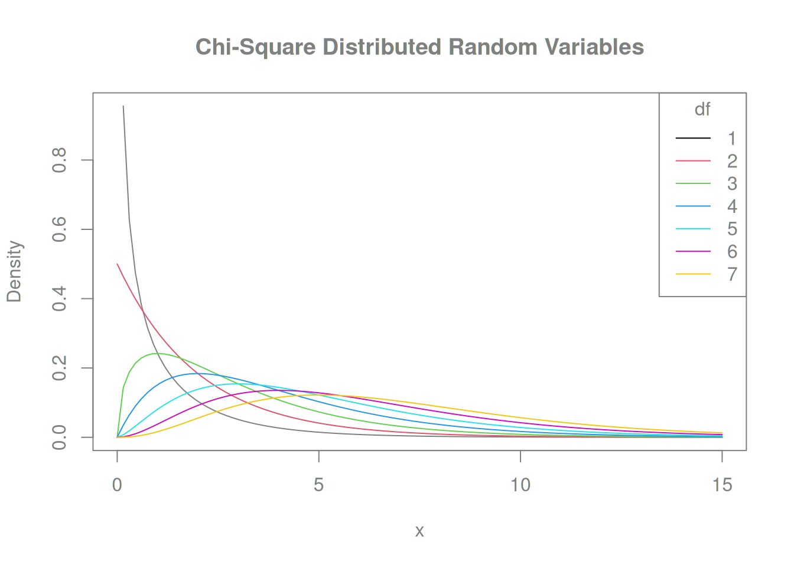
Increasing the degrees of freedom shifts the distribution to the right (the mode becomes larger) and increases the dispersion (the distribution’s variance grows).
2.2.7.4The Student \(t\) Distribution
Let \(Z\) be a standard normal random variable and \(W\) a \(\chi^2_\nu\) random variable, and assume that \(Z\) and \(W\) are independent. Then \[
X:=\frac{Z}{\sqrt{W/\nu}} \sim t_\nu,
\] i.e., \(X\) follows a Student \(t\) distribution (or simply \(t\) distribution) with \(\nu\) degrees of freedom.
The shape of a \(t_\nu\) distribution depends on \(\nu\). All \(t\) distributions are symmetric and bell-shaped, and they look similar to a normal distribution, especially when \(\nu\) is large. This is not a coincidence: for sufficiently large \(\nu\), the \(t_\nu\) distribution can be approximated by the standard normal distribution. As a rule of thumb, this approximation works reasonably well for \(\nu\geq 30\).
A \(t_\nu\) distributed random variable \(X\) has a mean if \(\nu>1\) and a variance if \(\nu>2\): \[\begin{align*}
E(X) &= 0, \qquad \nu > 1, \\[2ex]
\operatorname{Var}(X) &= \frac{\nu}{\nu-2}, \qquad \nu > 2.
\end{align*}\]
Let us plot some \(t\) distributions with different degrees of freedom \(\nu\) and compare them to the standard normal distribution.
# plot the standard normal densitycurve(dnorm(x), xlim =c(-4, 4), xlab ="x", lty =2, ylab ="Density", main ="Densities of t Distributions")# plot the t density for M=2curve(dt(x, df =2), xlim =c(-4, 4), col =2, add =T)# plot the t density for M=4curve(dt(x, df =4), xlim =c(-4, 4), col =3, add =T)# plot the t density for M=25curve(dt(x, df =25), xlim =c(-4, 4), col =4, add =T)# add a legendlegend("topright",c("N(0, 1)", "df=2", "df=4", "df=25"), col =1:4, lty =c(2, 1, 1, 1))
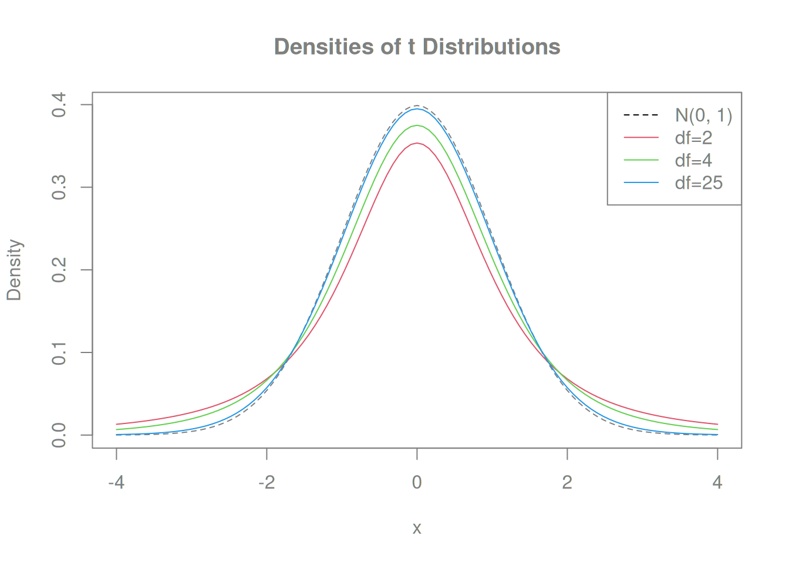
The plot illustrates that as the degrees of freedom increase, the shape of the \(t\) distribution comes closer to that of the standard normal bell curve. Already for \(\nu=25,\) there is little difference from the standard normal density. For small \(\nu,\) the \(t\) distribution has heavier tails than the standard normal distribution.
2.2.7.5The Cauchy Distribution
The (standard) Cauchy distribution is the special case of the \(t\) distribution with \(\nu=1\). Its density is \[
f(x)=\frac{1}{\pi\left(1+x^{2}\right)}.
\]
For the Cauchy distribution, the expectation does not exist, i.e., it has no mean. Let’s try to compute the mean of a Cauchy distribution and see what goes wrong. Its mean would be \[
\mu=E(X)=\int_{-\infty}^{\infty} \frac{x}{\pi\left(1+x^{2}\right)}\,dx.
\] For this improper integral to exist, both integrals \(\int_{-\infty}^{0}\) and \(\int_{0}^{\infty}\) need to be finite. Let’s look at the second integral: \[
\int_{0}^{\infty} \frac{x}{\pi\left(1+x^{2}\right)}\,dx=\left.\frac{1}{2 \pi} \log \left(1+x^{2}\right)\right|_{0} ^{\infty}=\infty.
\] Similarly, the first integral, \(\int_{-\infty}^{0},\) equals \(-\infty\). Since they are not both finite, the integral \(\int_{-\infty}^{\infty}\) does not exist; \(\infty-\infty\) is not a number. Thus, the Cauchy distribution has no mean.
In practice, this means that if you take a sample \(x_{1}, x_{2}, \ldots, x_{n}\) from the Cauchy distribution, the average \(\bar{x}\) does not tend to a particular number as \(n\) grows. Instead, every so often, you get such a huge value, either positive or negative, that the average is overwhelmed by it. In fact, the average of \(n\) i.i.d. standard Cauchy random variables is again standard Cauchy distributed, no matter how large \(n\) is.
2.2.7.6The F Distribution
Another ratio of random variables that is important to econometricians is the ratio of two independent \(\chi^2\) distributed random variables, each divided by its degrees of freedom. Let \(W \sim \chi^2_m\) and \(V \sim \chi^2_n\) be independent. Then \[
\frac{W/m}{V/n} \sim F_{m,n},
\] i.e., this ratio follows an \(F\) distribution with numerator degrees of freedom \(m\) and denominator degrees of freedom \(n\). The distribution was tabulated and named by George Snedecor in honor of Sir Ronald Fisher, who had derived a closely related distribution.
Since \(F_{m,n}\) distributed random variables are ratios of non-negative random variables, the support of both the pdf and the cdf is \(\mathbb{R}_{\geq0}\).
Example: Tail Probability of an \(F\) Distribution
Let \(Y\sim F_{3,14}\), i.e., \(Y\) has numerator degrees of freedom \(3\) and denominator degrees of freedom \(14\). Suppose we are interested in \(P(Y \geq 2)\). This can be computed using the function pf(). By setting the argument lower.tail = FALSE, we ensure that R computes \(1- P(Y \leq 2)\), i.e., the probability in the right tail beyond \(2\).
We can visualize this probability by plotting the density and shading the tail area using polygon().
# define coordinate vectors for vertices of the polygonx<-c(2, seq(2, 10, 0.01), 10)y<-c(0, df(seq(2, 10, 0.01), 3, 14), 0)# draw density of F_{3, 14}curve(df(x, 3, 14), ylim =c(0, 0.8), xlim =c(0, 10), ylab ="Density", main ="Density Function")# draw the polygonpolygon(x, y, col ="orange")
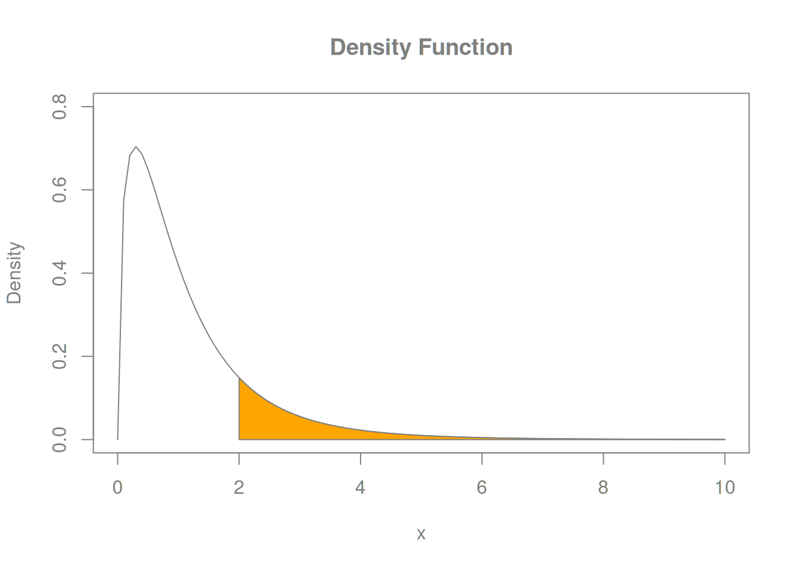
The \(F\) distribution is related to many other distributions. An important special case in econometrics arises when the denominator degrees of freedom \(n\) are large. Then, the \(F_{m,n}\) distribution can be approximated by the \(F_{m,\infty}\) distribution, which is simply the distribution of a \(\chi^2_m\) random variable divided by its degrees of freedom \(m,\) i.e., \[
\frac{W}{m} \sim F_{m,\infty} \quad\text{with}\quad W \sim \chi^2_m.
\]
References
Lindsay, Bruce G., and Prasanta Basak. 2000. “Moments Determine the Tail of a Distribution (but Not Much Else).”The American Statistician 54 (4): 248–51.
Wasserman, Larry. 2004. All of Statistics: A Concise Course in Statistical Inference. Vol. 26. Springer.